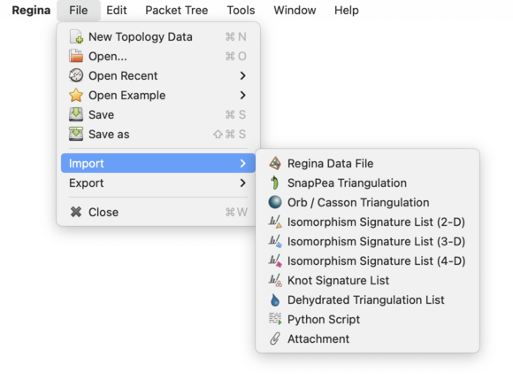
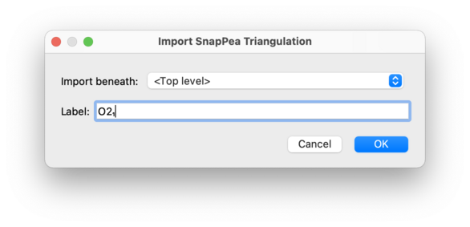
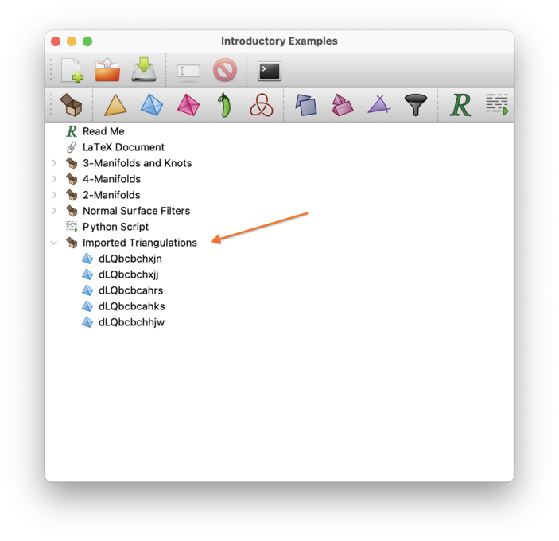
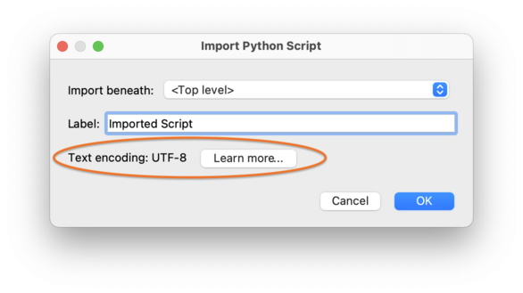

Importing and Exporting Data | |
| Prev | Next |
By default, Regina reads and writes
.rga data files in its own compressed
XML file format. The current (third-generation) file format was
introduced in Regina 7.0.
Besides this, Regina can also import data from and export data to several other file formats (including Regina's own older second-generation format). This allows you to pass data between Regina and other applications. This chapter outlines the available import and export formats.
If you are writing filters for some other program and you need a full specification for Regina's own XML file format, select → from the menu. You can also read the most up-to-date specification of Regina's file format on the Regina website.
An import involves reading data from some foreign file format and inserting it into your working packet tree (effectively merging it into whatever file you already have open). All imports are done through the → menu.

When you select an action from the → menu, you will first be asked to select a file. Once you have chosen the file to import, a second window will appear asking for additional details:

Regina can import data from the following file formats:
You can import another Regina data file. This effectively lets you insert the contents of one file inside another.
This is a convenient way of merging two data files into one. You can also merge data files from the command-line using the regconcat utility.
Regina can happily import either the new (third-generation, since Regina 7.0) or older (second-generation, until Regina 6.0.1) file formats, and can read both compressed and uncompressed XML.
You can import a 3-manifold triangulation from SnapPea / SnapPy, the excellent software for studying hyperbolic 3-manifolds by Culler, Dunfield and Weeks. Note that you can also perform some SnapPea calculations directly within Regina.
After the import, the triangulation will appear in Regina as a hybrid SnapPea triangulation; this ensures that SnapPea-specific data (such as fillings and peripheral curves) will be preserved. You can then convert this to one of Regina's native triangulations if you wish.
The file that you import should be a plain text file in SnapPea's triangulation format; an example is shown below. Any international characters should be encoded in UTF-8.
% Triangulation
m002
geometric_solution 2.02988321
nonorientable_manifold
CS_unknown
0 2
Klein 0.000000000000 0.000000000000
Klein 0.000000000000 0.000000000000
2
1 1 1 1
0132 3120 2130 3102
0 1 0 0
0 0 0 0 0 0 1 -1 0 0 0 0 1 -1 0 0
0 1 -1 0 0 0 0 0 -1 0 0 1 0 0 0 0
0 0 1 -1 -1 0 1 0 1 0 0 -1 -1 1 0 0
0 0 1 -1 -1 0 1 0 1 0 0 -1 -1 1 0 0
0.500000000000 0.866025403784
0 0 0 0
0132 3120 2130 3102
0 1 0 0
0 1 -1 0 0 0 0 0 -1 0 0 1 0 0 0 0
0 0 0 0 0 0 1 -1 0 0 0 0 1 -1 0 0
0 -1 1 0 1 0 0 -1 1 0 0 -1 -1 0 1 0
0 -1 1 0 1 0 0 -1 1 0 0 -1 -1 0 1 0
0.500000000000 0.866025403784
You can import a 3-manifold triangulation from Orb / Casson format. Orb is a variant of SnapPea for calculating hyperbolic structures on 3-orbifolds and 3-manifolds, written by Damien Heard.
The file that you import should be a plain text file in Orb / Casson format, which describes a triangulation in terms of its 1-skeleton. The beginning of an example file is illustrated below. Any international characters should be encoded in UTF-8.
% orb
8knot
1 0 1.000 1vu 2uw 1ux 2xv 1xw 2vu
2 0 1.000 1wu 2wx 1xv 2xu 1vw 2vw
...
You can import a list of isomorphism signatures or knot signatures from a text file. These signatures are a space-efficient, plain-text method of storing a list of triangulations or knots.
An isomorphism signature is a compact sequence of letters, digits and/or punctuation that identifies a triangulation uniquely up to combinatorial isomorphism. A knot signature is a similar type sequence of symbols that encodes a knot diagram up to relabelling, rotation, reflection and/or reversal. See the composition viewer for a more detailed discussion on isomorphism signatures, or [Bur11c] for examples of their use and a precise description of the 3-manifold signature format.
The list should be stored in a plain text file with one triangulation or knot per line. Each line may contain an arbitrary amount of data, but the first word of each line should be the isomorphism or knot signature. Note that signatures are case sensitive (i.e., upper-case and lower-case matter). An example file for 3-manifold triangulations is shown below.
dLQbcbchxjn L(11,3)
dLQbcbchxjj L(10,3)
dLQbcbcahrs L(5,2)
dLQbcbcahks S3
dLQbcbchhjw L(9,2)
In an isomorphism signature list, all signatures must represent triangulations of the same dimension (so, for example, the list cannot contain a mix of 3-manifold and 4-manifold signatures; likewise, it cannot contain a mix of signatures for triangulations and knots). The → menu has different menu items for importing lists in dimensions 2, 3 and 4, and for importing lists of knot signatures. Regina does support isomorphism signatures in higher dimensions, but for this you will need to use Python.
The import will appear in your packet tree as a new container, which will contain a new triangulation for each isomorphism signature in the list.

If you just wish to reconstruct a triangulation or knot from a single signature (not from many signatures), you can do this more easily by creating a new triangulation or a new link.
You can import a list of dehydration strings from a text file. Like isomorphism signatures, dehydration strings allow you to encode a list of 3-manifold triangulations in a space-efficient, plain-text manner.
Dehydration strings are less powerful than isomorphism signatures: only some triangulations have them (the triangulation must be connected with no boundary triangles and ≤ 25 tetrahedra), and they are not unique up to isomorphism (so relabelling tetrahedra might change the dehydration string). They feature in hyperbolic census papers such as [CHW99], in which the dehydration format is explicitly described.
The list should be stored in a plain text file with one triangulation per line. Each line may contain an arbitrary amount of data, but the first word of each line should be the dehydration string. An example file is shown below.
dafbcccaadl N3,1 Z/3 + Z
dadcbccdjkd N3,2 Z
dadbcccbbcv N3,3 Z
dadbcccccdm N3,4 Z
dadbcccaqhx N3,5 Z/2 + Z/2 + Z
As with isomorphism signatures, the import will appear in your packet tree as a new container, which will contain a new triangulation for each dehydration string in the list.
If you just wish to reconstruct a triangulation from a single dehydration string (not from many strings), you can do this more easily by creating a new triangulation.
You can import a Python script, which will appear in your data file as a script packet.
Script packets can include pre-set variables that reference other packets in your data file. If the imported file begins with a specially formatted comment block, Regina will recognise this and set variables in your script packet accordingly. This comment block will be written automatically when you export a script packet to a Python file. The special comment block is used only for setting variables, and will not appear in the code for your new script packet.
An example of such a comment block appears below.
### Regina Script: Homology Summary
###
### Variable tri: 3-Manifolds
###
### Begin Script
# See the users' handbook for more elaborate sample Python
# sessions.
# Output the homology of each triangulation.
t = tri.firstChild()
while t != None:
print t.label() + ":", t.homology()
t = t.nextSibling()
The comment block must appear at the very beginning
of the file, and each line must begin with three hashes
(###). A line of the form
“### Regina Script: ”
suggests to Regina a default label
for your new packet.
Each line of the form
“label### Variable ”
tells Regina to add the variable name: valuename
to the new script packet, and to make it refer to the packet
in your data file named value.
During the import, Regina will tell you how it will interpret any international characters in the script (that is, letters or symbols not found on a typical English keyboard). Such characters are stored using a text encoding, such as UTF-8 (a popular modern standard and the default in Regina), or LATIN1 (which has a long history of use with many Western European languages). If your script uses a different encoding, you will need to set this in Regina's options. If you only ever use letters or symbols found on a typical English keyboard, you do not need to worry about this at all.

You can insert any other file into your Regina data file by importing it as an attachment. For example, you could import a PDF document that documents your work with detailed formulae and diagrams.
To do this, select → from the menu. Regina will go through the same import process as described above.
Once you have imported your attachment, you can safely edit, move or even delete the original file from your computer, since your Regina data file will keep its own internal copy.
| Prev | Contents | Next |
| Modification | Up | Exporting |